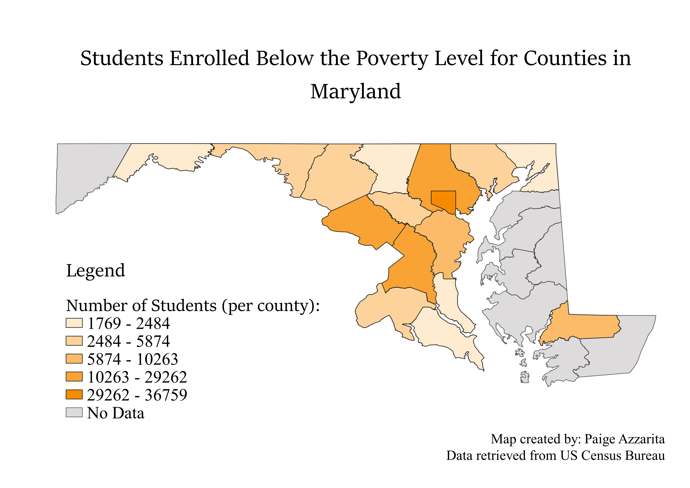

Homework 7: Census data choropleth
Paige Azzarita
This map depicts data referencing students enrolled in school by county in Maryland whose household incomes are below the poverty level. The data displayed below are the totals for number of students from preschool through graduate and proffessional school levels.

Data used for this project
CSV dataset
Link to shapefile